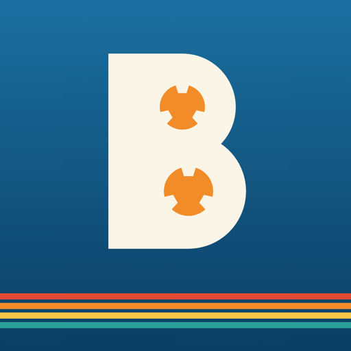
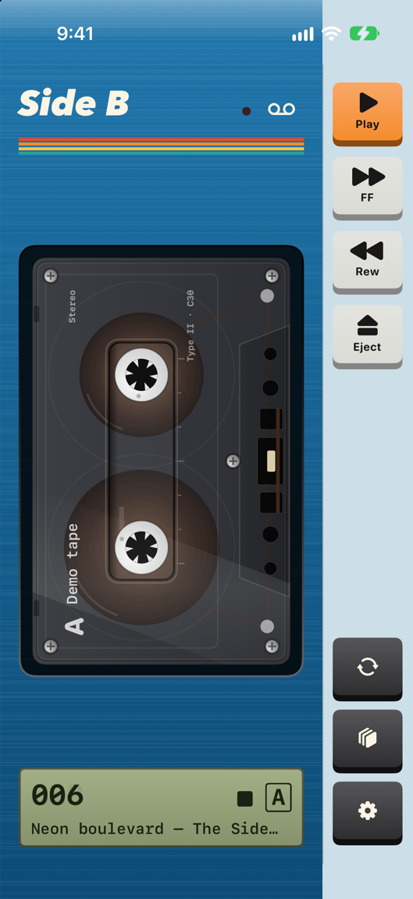
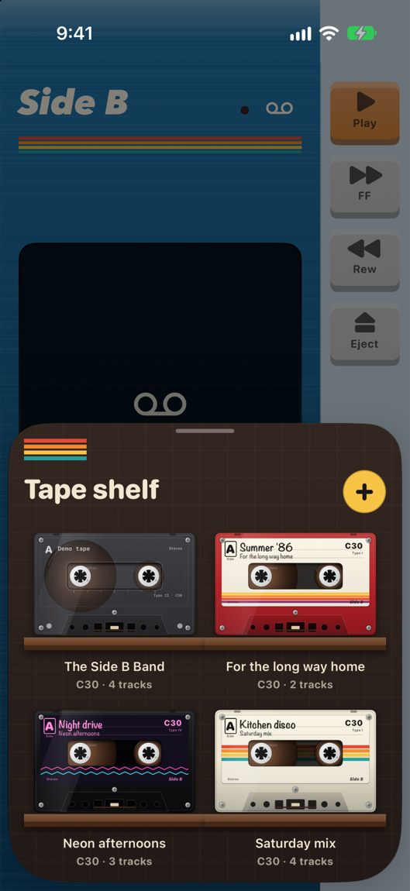
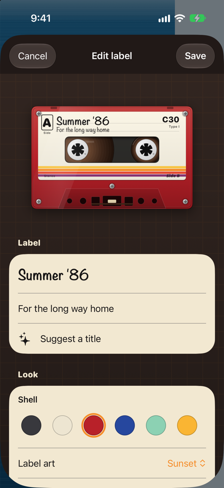
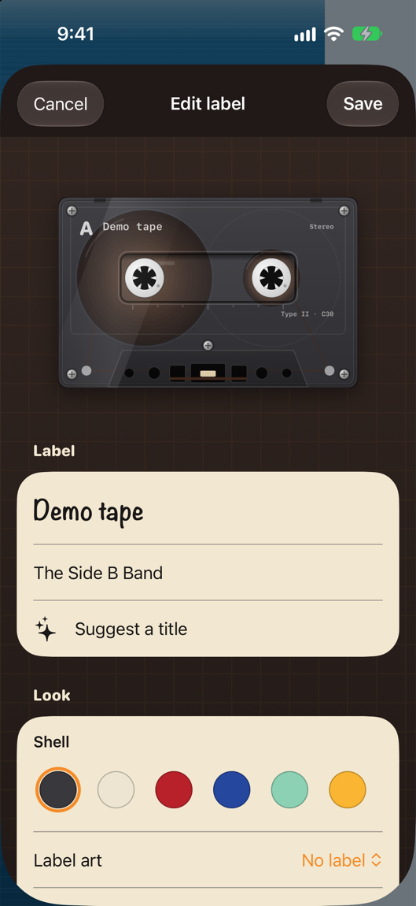

Side B: Retro Fold & Play
Vinyl, 80s, Mixtape, Equalizer · App Store · updated 17 October 2026
What is new
Version 1.0 is Waiting for Review as of 17 October 2026 after an earlier submission was rejected in October, so the App Store link returns 404 until approval. This page covers the pocket player, the tape shelf and the tape editor. Apple Music tapes need a subscription; the demo tape and your own audio files do not.
Facts
- Version
- 1.0 (build 2026100702), built with Xcode 27.0
- Platforms
- iPhone, iPad
- Languages
- 39 store languages, including English (US, UK, AU, CA), Spanish (Spain, Mexico), French (France, Canada), German, Japanese, Korean, Arabic, Hebrew and Hindi
- Price
- Free, no ads
- Privacy
- No account, no tracking. Tapes are stored on the phone only. Apple Music playback goes through MusicKit and needs a subscription.
- Accessibility
- Shell colour swatches carry names and a selected state for VoiceOver; Reduce Motion is handled; 84 accessibility labels in the code.
- Window
- Christmas draft 11 December 2026 to 1 January 2027; year-end draft 26 December 2026 to 10 January 2027
- Developer
- One developer in the UAE
Screens
Simulator captures of the screens described in the nominations, run with an ordinary-iPhone layout and no Apple Music account. The built-in demo tape (four instrumentals made on the device) is loaded; the other tapes on the shelf and in the second editor frame are sample tapes made from the same demo songs by a debug launch argument. No marketing frames.




Why now
- UK cassette sales were 164,000 units in 2025, up 53% on 2024 The Official Charts Company, 7 Jan 2026
- New Year's Day 2027 is Friday, 1 January 2027 US Office of Personnel Management, read 17 Oct 2026